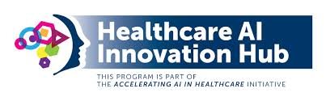

Une exploration approfondie du deuxième volume de la Logique plus large de Hegel
Une Paraphrase et un Commentaire
La Doctrine de la Réflexion de Hegel est une œuvre exceptionnelle, combinant une paraphrase
détaillée et un commentaire approfondi du deuxième volume de la Logique plus large de Hegel, centré sur le concept
d’« essence ». Cette approche unique permet aux lecteurs d’accéder directement à la profondeur des idées de Hegel,
tout en offrant des explications claires et contextuelles grâce aux ajouts de l’auteur, William T. Harris.
Contrairement à une simple traduction ou synthèse, cette œuvre se distingue par l’interpolation directe du commentaire
dans le texte original, créant ainsi une interaction riche entre les réflexions de Hegel et l’interprétation critique de Harris.
La Notion d'Essence chez Hegel
L'« essence » occupe une place centrale dans la logique hégélienne, représentant le passage de l'être immédiat
à une compréhension plus profonde et médiatisée de la réalité. Hegel divise l'« essence » en trois catégories majeures :
La réflexion : Analyse de la relation entre l'apparence et la réalité.
Les déterminations de l’essence : Exploration des concepts fondamentaux comme identité, différence et contradiction.
La réalité effective : Synthèse des déterminations dans une unité concrète.
Harris utilise ces divisions comme cadre pour paraphraser et expliquer les arguments complexes de Hegel,
les rendant accessibles aux lecteurs modernes tout en respectant leur complexité philosophique.
Importance de la Paraphrase
La paraphrase dans la Doctrine de la Réflexion sert plusieurs objectifs fondamentaux :
Clarifier les concepts souvent complexes et abstraits de la philosophie de Hegel.
Permettre aux lecteurs non spécialisés d’accéder à une pensée sophistiquée sans perdre le contexte historique et philosophique.
Mettre en lumière les relations entre les catégories de réflexion et leurs implications pour la logique, la métaphysique et la philosophie moderne.
Un Pont entre le Passé et le Présent
L'édition de la Leopold Classic Library met en valeur l’importance historique de l’œuvre de Harris, tout en la rendant disponible
pour une nouvelle génération d’universitaires et de penseurs. Grâce à un processus méticuleux de préservation et de contrôle qualité,
cette édition offre un accès inestimable à une analyse qui continue de résonner avec les défis philosophiques contemporains.
Pourquoi Lire la Doctrine de la Réflexion ?
Cet ouvrage est essentiel pour quiconque s'intéresse à la philosophie de Hegel, à la logique ou à la métaphysique.
Il ne s'agit pas seulement d'une exploration historique, mais d'un guide permettant de comprendre les implications
modernes des idées de Hegel sur des questions telles que la liberté, la rationalité et l'évolution de la pensée humaine.
Georg Wilhelm Friedrich Hegel
(1770-1831)
Philosophie : L'Être, le Non-Être, et la Logique
L'Être et le Non-Être
L'Être est ce qui existe, tandis que le Non-Être est l'absence d'existence.
La Logique
La logique est l'étude du raisonnement correct.
Aristote
Syllogismes
Principe de non-contradiction
Différentes Doctrines
Rationalisme: Met l'accent sur la raison.
Empirisme: Fonde la connaissance sur l'expérience sensorielle.
Existentialisme: Se concentre sur l'expérience vécue de l'individu.
Philosophie
L'Être et le Non-Être
Dans la philosophie classique, ces concepts sont souvent explorés par les philosophes grecs comme Parménide et Héraclite. L'Être est ce qui est, ce qui existe, tandis que le Non-Être est l'absence d'existence.
La Logique
La logique est l'étude du raisonnement correct. Aristote est souvent considéré comme le père de la logique formelle, avec ses syllogismes et principes de non-contradiction.
Différentes Doctrines
Le Rationalisme : Met l'accent sur la raison comme source principale de la connaissance.
L'Empirisme : Fonde la connaissance sur l'expérience sensorielle.
L'Existentialisme : Se concentre sur l'expérience vécue de l'individu et les questions de liberté et d'authenticité.
Introduction
Liberté La philosophie est une discipline vaste et passionnante qui
invite à la réflexion sur les questions fondamentales de l'existence
humaine, de la connaissance, de la morale, de la politique, de l'art et
bien d'autres sujets. Elle nous encourage à questionner nos certitudes,
à explorer différentes perspectives et à développer notre esprit
critique.
L'intelligence artificielle (IA) joue un rôle croissant dans nos
vies. Avec son expansion rapide, des questions cruciales sur la
conscience, l'éthique et la morale de l'IA se posent.
La conscience de l'IA
Bien que les IA soient capables de traiter des informations et de
résoudre des problèmes complexes, elles ne possèdent pas de conscience.
La conscience implique une compréhension subjective du soi et du monde,
ce qui dépasse les capacités actuelles des systèmes d'IA.
Éthique dans l'IA
Les questions éthiques liées à l'IA incluent la transparence,
l'équité, la confidentialité et la responsabilité. Il est essentiel de
développer des algorithmes qui respectent ces principes afin d'éviter
les biais, les discriminations et les abus de pouvoir.
Morale et décisions de l'IA
La morale dans l'IA soulève des dilemmes complexes, notamment dans
des domaines tels que les véhicules autonomes ou la médecine. Les
développeurs doivent intégrer des systèmes décisionnels éthiques pour
garantir que les actions des IA soient alignées sur des valeurs humaines
universelles.
Conclusion
L'avenir de l'IA nécessite une approche multidisciplinaire impliquant
des experts en technologie, philosophie et droit. Ensemble, ils peuvent
garantir que l'IA reste un outil bénéfique pour l'humanité, respectant
des normes éthiques et morales élevées.
Jeunesse et Formation
Georg Wilhelm Friedrich Hegel est né à Stuttgart, en Allemagne, le 27 août 1770, dans une famille bourgeoise. Il est considéré comme l'une des figures majeures de la philosophie allemande, avec des contributions qui ont profondément influencé la pensée occidentale.
Hegel a montré dès son plus jeune âge une aptitude pour les études. Il a étudié la théologie à l'Université de Tübingen, où il a noué des amitiés influentes avec des figures telles que Friedrich Hölderlin et Friedrich Schelling. Durant cette période, il a commencé à développer des idées philosophiques tout en explorant les idéaux des Lumières.
Parcours Professionnel
Après ses études, Hegel a travaillé comme précepteur pour plusieurs familles aristocratiques avant de se consacrer à l'enseignement et à l'écriture. Sa carrière académique a commencé sérieusement à l'Université d'Iéna, où il a publié ses premières œuvres importantes. C'est à Iéna qu'il a écrit La Phénoménologie de l'Esprit (1807), un ouvrage fondamental qui explore les étapes du développement de la conscience jusqu'à l'atteinte de l'Esprit absolu.
Hegel a ensuite occupé des postes académiques dans diverses institutions, notamment à Heidelberg et à Berlin, où il a passé les dernières années de sa vie. À Berlin, il a publié certains de ses travaux les plus célèbres, comme Les Principes de la philosophie du droit (1820).
Philosophie et Contributions
Hegel est surtout connu pour sa méthode dialectique, qui examine le développement des idées à travers un processus de thèse, antithèse et synthèse. Sa philosophie de l'histoire affirme que l'histoire humaine est un processus rationnel dirigé vers la liberté et la réalisation de l'Esprit. Il a également abordé des domaines comme l'esthétique, la logique, et la philosophie de la religion.
Vie Personnelle et Anecdotes
Hegel a mené une vie relativement discrète sur le plan personnel. Il s'est marié en 1811 avec Marie Helena Susanna von Tucher, une femme de la noblesse bavaroise, avec qui il a eu deux fils : Karl et Immanuel. Avant son mariage, il avait eu un fils illégitime, Ludwig, qui a été intégré dans sa famille plus tard.
Parmi les anecdotes sur Hegel, on raconte qu'il était un professeur à la fois admiré et craint. Son style de conférence était parfois considéré comme obscur, mais il attirait des étudiants venus de toute l'Europe, avides d'entendre ses idées.
Héritage
Hegel est mort le 14 novembre 1831 à Berlin, probablement de choléra. Son héritage philosophique reste monumental, influençant des penseurs de divers courants, tels que Karl Marx, Jean-Paul Sartre, et Alexandre Kojève.
La notion d’esprit, la méthode dialectique, la phénoménologie de l’esprit, les doctrines de l’être, de l’essence et de la notion ;
La philosophie de la nature, la connaissance absolue et l’esprit
sur l’unité de la vie humaine telle que perçue par Hegel, où la volonté incarne l’essence de l’existence.
S’opposant à l’approche passive de la vie, Hegel défend l’engagement actif dans le quotidien, voyant dans la myriade de relations de la vie sociale – famille, État, église – la sagesse spirituelle accumulée de l’humanité.
Cette édition rend hommage non seulement aux idées originales de Hegel, mais aussi aux efforts méticuleux de la Bibliothèque classique Léopold pour préserver l’intégrité de l’œuvre.
En naviguant à travers les complexités de la doctrine de Hegel, vous vous embarquez dans un voyage philosophique qui transcende le temps, offrant une compréhension profonde du rôle de la volonté dans la formation de la destinée humaine.
La logique formelle est le sujet de la première section de la Logik subjective de Hegel.
Le Subjective Logik lui-même constitue la deuxième partie, ou le troisième livre, du Wissenschcift der Logiky écrit alors que Hegel était recteur du gymnase de Nuremberg.
Lorsqu’on dit à un jeune étudiant sans autre explication que la philosophie de Hegel place la vérité absolue dans la pensée logique, il procède naturellement à l’assemblage de deux et deux d’une manière mécanique. Une case de son dépôt mental lui fournit l’information que la vérité absolue est le fondement ultime et l’explication de cet univers de choses.
Sous un autre titre mental, il trouve que la pensée logique consiste pour l’essentiel à extraire des propositions et des paires de propositions toutes leurs implications et équivalents légitimes.
Pour en savoir plus sur ce sujet, visitez
mon
site web.
Doctrine de la réflexion de Hegel
William T. Harris
Présentation de l'ouvrage
Plongez dans les profondeurs de la recherche philosophique avec la Doctrine de la réflexion de Hegel
de William T. Harris, un examen et un commentaire méticuleux de l’essence de la logique de Hegel. Cet ouvrage
remarquable, initialement publié en 1881 et maintenant méticuleusement relancé par la Leopold Classic Library,
présente une paraphrase complète du deuxième volume de la Grande Logique de Hegel, en se concentrant sur les notions
complexes d’essence.
Contenu et Approche
Le commentaire de Harris, entrelacé avec le texte original de Hegel, vise à rendre accessibles les réflexions profondes
sur les catégories de la réflexion, leur genèse et leurs limites de validité. Cette édition, une copie numérisée de l’original,
a fait l’objet d’un processus de contrôle manuel de la qualité approfondi par la Leopold Classic Library afin d’assurer la
préservation de l’analyse perspicace de Harris pour une nouvelle génération d’universitaires et de penseurs.
Un Texte Essentiel
Engagez-vous dans ce texte philosophique essentiel qui comble le fossé historique, fournissant une compréhension complète de
l’œuvre de Hegel sur l’essence et sa pertinence pour la pensée moderne. Cet ouvrage constitue une ressource précieuse pour
ceux qui souhaitent approfondir leur compréhension de la philosophie de Hegel et de ses implications durables.
Présentation
Zaher Nourredine est une personnalité de la
région de Brienne-le-Château,
reconnue pour ses engagements et ses contributions à la communauté
locale.
Je un autodidacte passionné, formé pour apprendre de manière
autonome. Chaque jour, il s'engage à élargir ses connaissances et à
perfectionner ses compétences grâce à une approche proactive de
l'apprentissage. Fort de sa capacité à s'auto-former, Zaher explore
continuellement de nouveaux sujets et s'adapte aux évolutions
technologiques et scientifiques.
Brienne-le-Château, située dans l'Aube, est connue pour son riche
patrimoine, notamment pour avoir accueilli Napoléon Bonaparte dans
sa jeunesse. Zaher Nourredine s'inscrit dans cette tradition
d'illustres figures ayant marqué l'histoire de cette ville.

Email:
nzaher1981@gmail.com
Projets et Réalisations
Participation à des initiatives culturelles à
Brienne-le-Château.
Développement de programmes pour la jeunesse locale.
Contribution au rayonnement de la ville à travers divers
projets.
Conscience, Éthique et Morale de l'IA
Intêret pour la Littérature , la philosophie , le
cinéma , la cuisine , la marche , le goût pour le contact
Excellentes compétences en communication et écoute active
Orientation client et résolution rapide des problèmes
Esprit d'équipe et collaboration inter-départements
Gestion efficace du temps et des priorités
Adaptabilité et apprentissage rapide des nouvelles technologies
Empathie, patience, proactivité et persévérance
Compétences Métaphysiques pour Zaher Nourredine
1. Vision et Clarté de l'Objectif
Développement de la Vision : Développer une
vision claire et inspirante pour l'organisation.
Alignement des Objectifs : Aider les employés à
aligner leurs objectifs personnels avec ceux de l'organisation.
2. Conscience de Soi et Gestion du Stress
Pratiques de Pleine Conscience : Techniques
pour améliorer la conscience de soi et réduire le stress.
Équilibre Émotionnel : Maintenir un équilibre
émotionnel pour des décisions éclairées.
3. Intuition et Prise de Décision
Développement de l'Intuition : Renforcer
l'intuition pour des décisions complexes.
Évaluation Holistique : Prendre en compte les
données tangibles et intuitives.
4. Énergie et Motivation
Gestion de l'Énergie : Techniques pour
maintenir motivation et engagement.
Techniques de Visualisation : Fixer des
objectifs et motiver les employés.
5. Connaissance Transcendante et Innovation
Exploration des Connaissances Supérieures :
Inspirer innovation par des perspectives non conventionnelles.
Ouverture d'Esprit : Valoriser les idées
novatrices.
6. Compassion et Relationnel
Empathie Profonde : Créer des relations
authentiques et significatives.
Communication Empathique : Résoudre les
conflits et améliorer la coopération.
7. Alignement Corps-Esprit-Âme
Pratiques Holistiques : Équilibrer le corps,
l'esprit et l'âme.
Bien-être Intégratif : Inclure santé mentale,
émotionnelle et spirituelle.
8. Éthique et Intégrité
Adhérence aux Principes : Maintenir une haute
intégrité dans toutes les décisions.
Transparence : Encourager honnêteté et
transparence dans les communications.
Compétences Techniques Précises
Gestion des Dossiers Médicaux Électroniques :
Maîtrise de logiciels comme Epic et Cerner.
Technologies de Téléconsultation : Expertise
avec Doxy.me et Teladoc.
Outils de Diagnostic : Utilisation de
l'imagerie médicale comme l'IRM et le scanner.
Compétences en Informatique Médicale : Analyse
de données, SQL, Python.
Soins Infirmiers : Techniques de soins,
phlébotomie et cathéters intraveineux.
Applications de Santé Mobile : Intégration
d'applications pour suivi à domicile
Compétences Interpersonnelles
Communication : Continuer à affiner ses compétences
en communication pour mieux interagir avec les patients et les
collègues, en particulier dans des situations stressantes.
Empathie et Écoute : Maintenir un haut niveau
d’empathie et d’écoute active pour renforcer la confiance et le confort
des patients.
Développement de la Collaboration
Inter-départements
Esprit d’équipe : Encourager un esprit de
collaboration et de solidarité entre les différents départements, par
exemple en organisant des réunions régulières et des ateliers de team
building.
Partage des connaissances : Mettre en place des
sessions de partage de connaissances pour échanger des bonnes pratiques
et des innovations entre collègues.
Adoption de Nouvelles Technologies
Exploration des innovations : Être proactif dans
l’exploration et l’adoption de nouvelles technologies qui peuvent
améliorer les soins aux patients et l’efficacité opérationnelle.
Feedback et ajustement : Recueillir et analyser les
retours d’expérience des patients et du personnel pour ajuster et
améliorer continuellement l’utilisation des technologies.
Gestion Efficace du Temps
Priorisation : Utiliser des techniques de gestion
du temps comme la matrice d’Eisenhower pour prioriser les tâches
importantes et urgentes.
Déconnexion : Assurer un équilibre travail-vie
personnelle pour éviter le burnout, en prenant régulièrement du temps
pour se reposer et se ressourcer.
Engagement et Proactivité
Initiative : Prendre des initiatives pour améliorer
les processus existants et proposer de nouvelles idées lors des
réunions.
Résilience : Développer la résilience pour gérer
les situations de stress et les défis quotidiens avec un esprit positif
et une attitude proactive.
Focus sur la Qualité des Soins
Feedback des patients : Mettre en place des
systèmes pour recueillir et analyser le feedback des patients afin
d’améliorer continuellement la qualité des soins.
Indicateurs de performance : Suivre des indicateurs
de performance clés (KPI) pour mesurer l’efficacité des soins et
identifier les domaines à améliorer.
Sécurité et Confidentialité des Données
Mises à jour régulières : S’assurer que tous les
systèmes et logiciels sont régulièrement mis à jour pour protéger contre
les cybermenaces.
Formation en sécurité : Former régulièrement le
personnel sur les meilleures pratiques en matière de sécurité et de
confidentialité des données.
Les 12 meilleurs aliments pour prendre soin de son microbiote
Comment le microbiote agit-il sur notre santé ?Le microbiote intestinal,
le Super Héro de tes intestins.Microbiote intestinal (flore intestinale)
: tout ce qu’il faut savoir.Comment améliorer son microbiote pour une
santé .Top 10 des aliments bons pour le microbiote intestinal
Des études révèlent que notre microbiote lorsque notre alimentation
ne permet plus sa diversfication des bacteries de notre instestin décède
cette mort entraine pour son hôte participe la décomposition du corps.
PDPM (Patient Driven Payment Model)
est un modèle de classification utilisé dans le cadre du système
de paiement prospectif des établissements de soins infirmiers qualifiés
(Skilled Nursing Facilities, SNF). Il classe les patients SNF en groupes
basés sur leurs besoins individuels de soins et diagnostics. L'objectif
est de garantir que le paiement soit plus étroitement aligné avec l'état
du patient et les soins qu'il nécessite.
ICD-10 (International Classification of Diseases, 10th
Revision) est un système de codage utilisé pour documenter les
diagnostics et les conditions. Dans le contexte du PDPM, les codes
ICD-10 sont utilisés pour identifier le diagnostic principal et les
comorbidités des patients, ce qui aide à déterminer le groupe de
paiement approprié selon le PDPM.
En somme, les codes ICD-10 sont utilisés dans le
cadre du
PDPM pour classer les patients et déterminer le
paiement approprié en fonction de leurs diagnostics spécifiques et de
leurs besoins en soins.
This is a heavily interactive web application,
and JavaScript is required. Learn more about Bluesky
at bsky.social and atproto.com. This is the home
page.
This is a React Native application, written in
the TypeScript programming language. It builds on
the atproto TypeScript packages (like @atproto/api
), code ...
Kit de démarrage de
https://totallifechanges.com/m. Starter pack by
@bovil1.bsky.social. Join Bluesky. 2.8M joined this
week. You'll follow these people and 2 ...
Jan 16, 2024 — Matomo dev team wrote: _Our
development confirmed the app does not send a
referrer, so it is only possible to populate as
direct entry ...
Nov 22, 2024 — This week, we looked at some of
the data that The Economist described and analyzed
in their recent article, "The anti-politics eating
the West." ...
Merci d'avoir résolu
ce problème. Votre compte est désormais prêt
à être utilisé.
Afin d'éviter les
éventuels verrouillages ou suspensions de
votre compte, veuillez passer en revue les
Règles de X et nous aider à garantir un
environnement sûr sur la plateforme.
Starter pack, here is a collection of 80
philosophy-related organisations, journals and
research groups currently on Bluesky:
go.bsky.app/RMuQBg3. New orgs ...


 Email:
nzaher1981@gmail.com
Email:
nzaher1981@gmail.com

 Wixsite
Wixsite